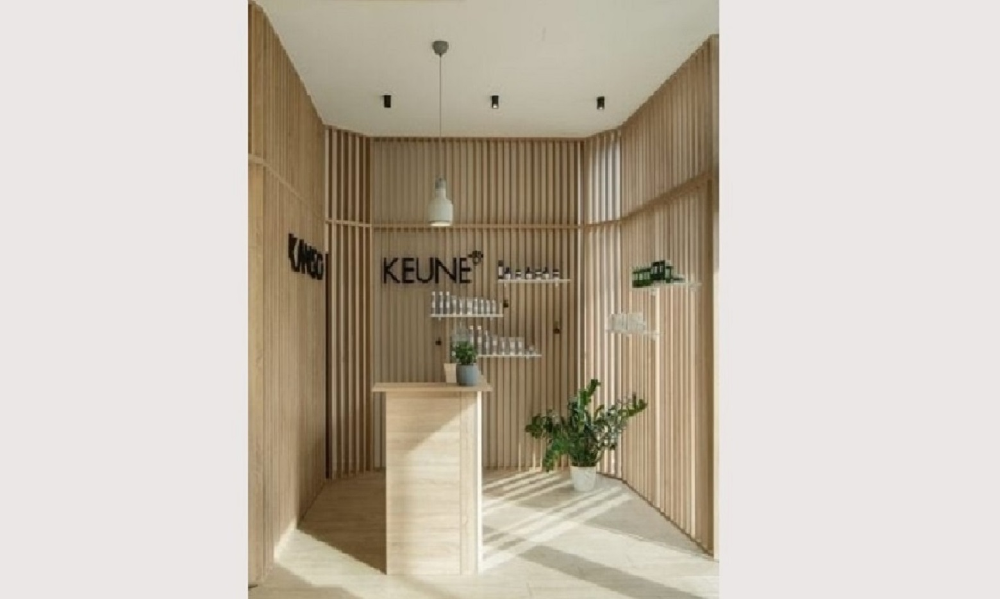

Naša priča, naš tim O našem salonu
Osnovani smo 2017. godine. Naš tim postepeno se razvijao, i sada imamo 10 članova našeg tima. To su sve, mahom, uz vlasnike Ivana i Marinu, mladi ljudi, puni znanja, volje i zanosa u pružanju najbolje usluge i ostvarenju željene frizure našim klijentima.
Naš salon je zamišljen posve drugačije od uobičajenih kvartovskih salona, pa smo tako, u ovu urbanu i mladu četvrt Vrbani, zapadnog dijela grada, unijeli svježinu i dozu istočnjačkog chica. Naše ljubazno osoblje će vas dočekati na pultu na ulazu:
Inspiracija pri izradi kreativnog koncepta interijera frizerskog salona Kanso bio je japanski vrt. Japanski vrt, baš kao i Kanso predstavljaju prostor jednostavnih linija i prirodnih materijala, koji proizlazi iz godina tradicije i vještine izvedbe, a u koji ljudi dolaze ili kako bi uživali u estetici ili radi opuštanja i kontemplacije. Kao što je japanski vrt podijeljen u različite zone, tako se i salon dijeli u nekoliko prostora različitih funkcija.
Zone čine:
Prodajni dio koji se nalazi pri samom ulazu
Kolor bar - mjesto gdje se odvija savjetovanje i konačno miješanje boja kose
Intiman prostor za pranje kose - tamniji prostor s prigušenom rasvjetom koji omogućava klijentu da se u potpunosti opusti i prepusti ritualu pranja kose i masaži

Radna zona gdje se događaju Kanso kreacije te akademija u kojoj se odvija edukacija, sa interesantnim slikama na zidu
Centralni dio prostora čine radne jedinice, sastavljene od velikih površina ogledala koja omogućavaju sagledavanje kompletne osobe prilikom odabira frizure, a koje su odijeljene policama i prolazima.
Jednostavnošću prostora stvorena je podloga za isticanje kreativnih frizura koje nastaju u ovom prostoru.